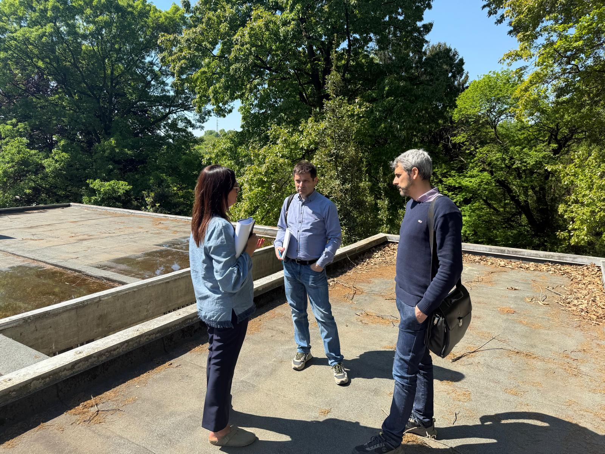

ABOUT

PROFILO
Annalisa si laurea in Architettura presso il Politecnico di Bari nel 2002. Dopo le prime esperienze professionali maturate in studi di progettazione della sua città, si trasferisce a Milano, dove dal 2004 intraprende un percorso orientato alla gestione e al coordinamento di opere complesse.
Nel corso della sua attività assume la Direzione Tecnica di importanti interventi, tra cui l'ampliamento del complesso ospedaliero dell'Ospedale San Raffaele di Milano (DIBIT), comprensivo di parcheggio interrato multipiano, la realizzazione della stazione metropolitana di collegamento all'ospedale, un centro commerciale Carrefour a Limbiate (MB) e una residenza universitaria da 170 alloggi per l'Università Vita-Salute San Raffaele.
Collabora con primari General Contractor operanti sul territorio lombardo, occupandosi del coordinamento e della gestione "chiavi in mano" di interventi nei settori della ristorazione, della moda, del commerciale e dell'edilizia residenziale privata.
Parallelamente all'attività di direzione e coordinamento, sviluppa e firma progetti di ristrutturazione e recupero edilizio, dedicando particolare attenzione al contesto architettonico, alla sostenibilità degli interventi, all'ottimizzazione delle risorse economiche e alla valorizzazione del patrimonio esistente. L'approccio progettuale si fonda sulla ricerca di soluzioni equilibrate, capaci di coniugare qualità architettonica, funzionalità, rispetto della storia dei luoghi e controllo dei costi di realizzazione.
ATTIVITÀ DELLO STUDIO
Lo studio offre un servizio integrato di progettazione e gestione dell'intervento, accompagnando il cliente in tutte le fasi del processo edilizio: dall'analisi preliminare e di fattibilità alla progettazione architettonica, dalla gestione delle pratiche autorizzative al coordinamento dei professionisti coinvolti, fino alla direzione lavori e all'ottenimento delle certificazioni finali di agibilità.
Grazie a una consolidata rete di collaboratori specialistici, lo studio è in grado di affrontare ogni aspetto técnico del progetto, garantendo un unico interlocutore e una gestione coordinata dell'intero processo.
CONSULENZE
Lo studio fornisce consulenze preliminari rivolte a privati, investitori e operatori immobiliari, supportando le decisioni di acquisto attraverso analisi di fattibilità tecnica, urbanistica ed economica.
Le attività di consulenza comprendono inoltre la valutazione dei costi di intervento, l'analisi dei materiali, la definizione delle strategie di realizzazione, il supporto alla scelta delle imprese e il controllo economico delle commesse, con l'obiettivo di fornire al cliente strumenti concreti per assumere decisioni consapevoli e sostenibili.